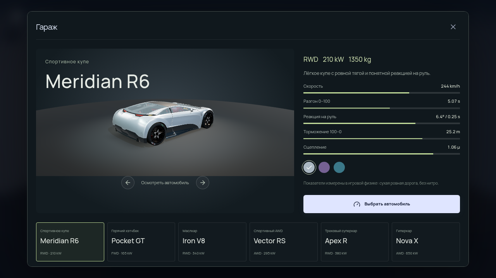
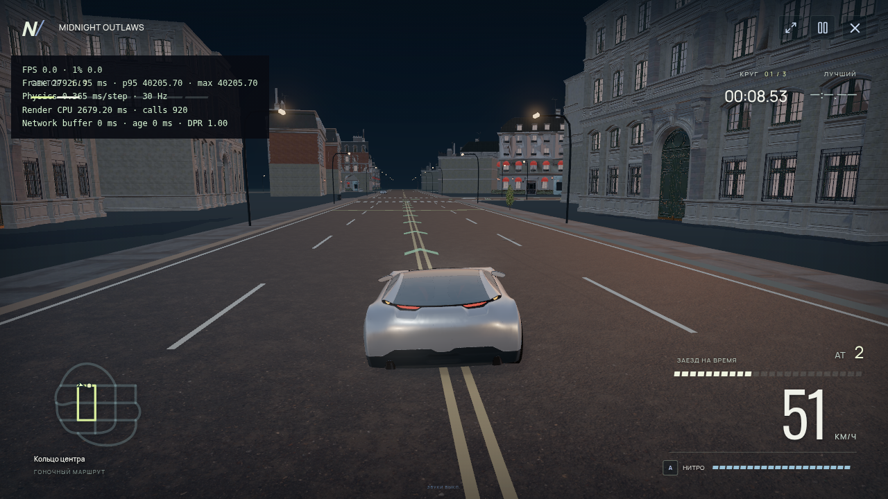
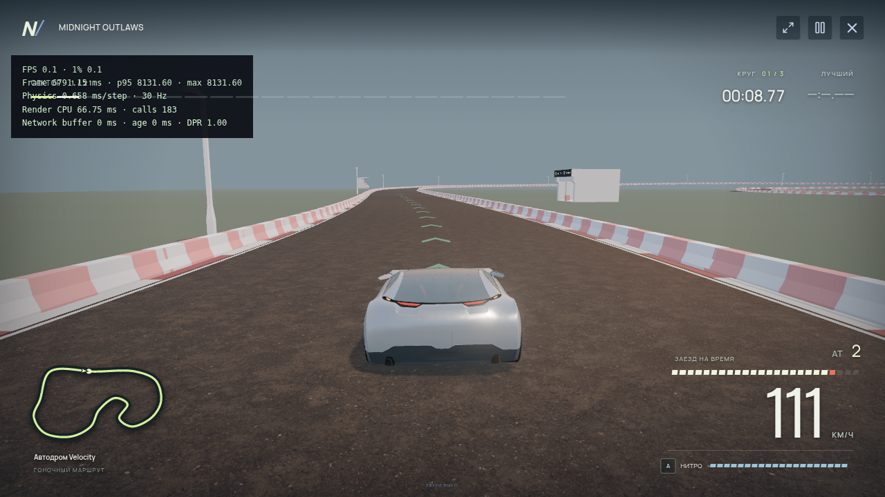
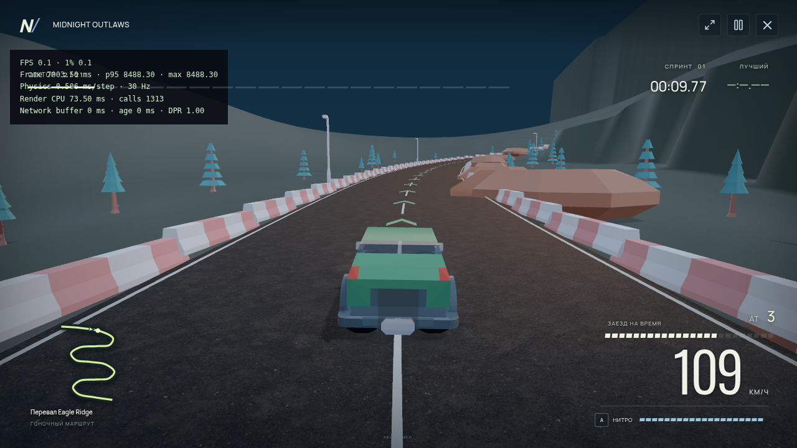
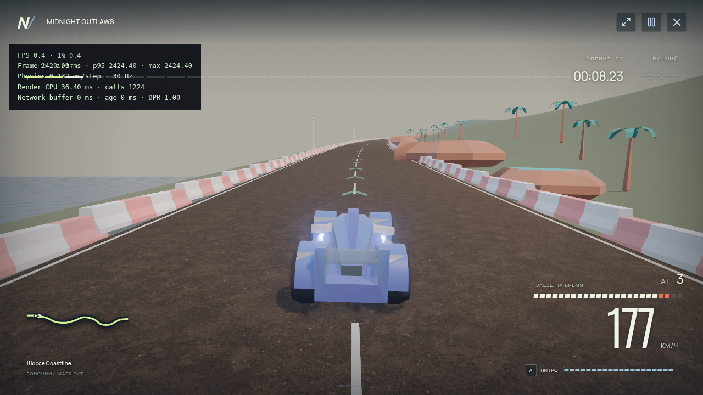
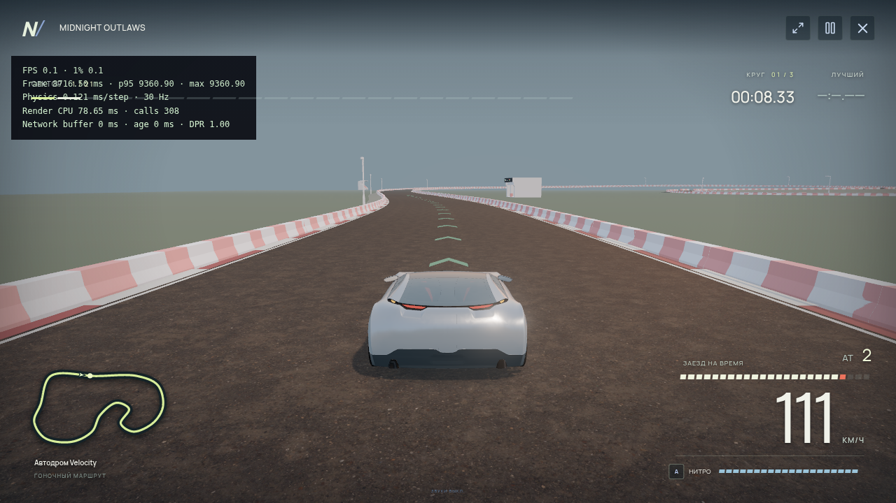

REAL RUNTIME CAPTURES
MIDNIGHT
OUTLAWS
Шесть автомобилей. Город, автодром, горный перевал и прибрежное шоссе. Записи получены из работающей игры с её настоящим звуком.
Тестовая среда использует программный GPU SwiftShader. Видеозапись Low не обеспечивает комфортный FPS; High/Ultra работают ещё медленнее. Это демонстрация функций и материалов. Целевые 60 FPS на игровом ПК не подтверждены.






Игровой процесс и звук
Реальное время записи сохранено. Кадры не ускорены, плавность не дорисована. Видео захватывает игровой canvas; HUD виден на скриншотах. Звук — оригинальный многослойный синтез, а не профессиональные записи двигателей.
Два независимых клиента
Настоящая гонка Pocket GT и Iron V8 на Velocity Circuit: общий старт, контрольные точки, серверный финиш, сохранённые результаты и повторный заезд. Слева и справа — два отдельных процесса Chromium на локальном Colyseus. Для функциональной проверки использован Low/DPR 0.15; это не демонстрация качества графики. Запись без звука, скорость не изменена. Проверки публичного WSS описаны отдельно в отчёте релиза.
Шесть машин — шесть звуковых профилей
Записи работающего автомобиля на Velocity Circuit. Одинаковый маршрут, разные конфигурации физики и двигателя. Это живой игровой звук; качество записи ограничено программным GPU. Управление использует ограничение тестовой скорости, поэтому эти клипы не заменяют измерения разгона.
Измерения в этой среде
INTEL(R) XEON(R) PLATINUM 8573C · 5 логических CPU · ANGLE (Google, Vulkan 1.3.0 (SwiftShader Device (Subzero) (0x0000C0DE)), SwiftShader driver). Viewport 1280×720, DPR устройства 1. В Low внутренний DPR 0.85; показатели включают накладные расходы записи. GPU timer и видеопамять недоступны.
| Трасса | Качество | FPS | 1% low | Средний кадр | p95 | Физика/шаг | Draw calls |
|---|---|---|---|---|---|---|---|
| NEXUS City | low | 0.66 | 0.24 | 1504.5 ms | 3022.8 ms | 0.228 ms | 104 |
| Velocity Circuit | low | 1.1 | 0.58 | 913.3 ms | 1242.2 ms | 0.189 ms | 63 |
| Eagle Ridge | low | 1.5 | 0.60 | 677.7 ms | 1127.1 ms | 0.111 ms | 460 |
| Coastline Run | low | 1.00 | 0.49 | 1001.0 ms | 1792.4 ms | 0.210 ms | 436 |
| NEXUS City | high | 0.05 | 0.02 | 21378.6 ms | 40205.7 ms | 0.646 ms | 761 |
| Velocity Circuit | high | 0.13 | 0.09 | 7564.1 ms | 11407.7 ms | 0.400 ms | 169 |
| Eagle Ridge | high | 0.23 | 0.20 | 4278.7 ms | 5092.4 ms | 0.247 ms | 1313 |
| Coastline Run | high | 0.23 | 0.16 | 4300.2 ms | 6239.1 ms | 0.213 ms | 1220 |
| Velocity Circuit | ultra | 0.11 | 0.08 | 8722.5 ms | 13252.9 ms | 0.122 ms | 304 |
Различия автомобилей
Измерено в игровой физике на ровной сухой поверхности, без нитро. Это характеристики вымышленных игровых машин.
| Автомобиль | 0–100 | 0–200 | Максимум | 100–0 |
|---|---|---|---|---|
| meridian-r6 | 5.07 s | 19.50 s | 243.9 km/h | 25.2 m |
| pocket-gt | 5.22 s | 24.10 s | 229.5 km/h | 24.4 m |
| iron-v8 | 4.26 s | 15.10 s | 262.7 km/h | 31.2 m |
| vector-rs | 4.01 s | 14.25 s | 273.0 km/h | 24.1 m |
| apex-r | 3.08 s | 9.72 s | 294.9 km/h | 19.2 m |
| nova-x | 2.80 s | 7.52 s | 360.5 km/h | 23.8 m |
Ограничения
Пять новых моделей и окружение Kenney стилизованы и требуют более детализированных замен для заявленного визуального ориентира. Профессиональные записи двигателей, кабина с интерьером, прыжки/перевороты и погода не реализованы. Публичные столкновения автомобилей отключены; приватный контактный режим ограничен городскими маршрутами. Физические контроллеры и игровой GPU не проверены.
Сопоставимые кадры «до» с той же камерой не сохранены; визуальное сравнение Before/After не подменяется чужими изображениями.
Car Concept — Eric Chadwick / Darmstadt Graphics Group, CC BY 4.0 (концепция Unity Fan; изменены материалы, подготовлены LOD, удалены эмблемы). Amazon Lumberyard Bistro — Amazon Lumberyard, CC BY 4.0; порт Logan Preshaw, изменения John James Gutib. HDRI — Poly Haven, CC0. Kenney Car/Racing/Nature Kits — CC0. Звук и трассы — оригинальная работа NEXUS.
Исходные лицензии и изменения · Лицензии автомобилей · Лицензии окружения · Фактические измерения и хеши файлов
Запустить игру →